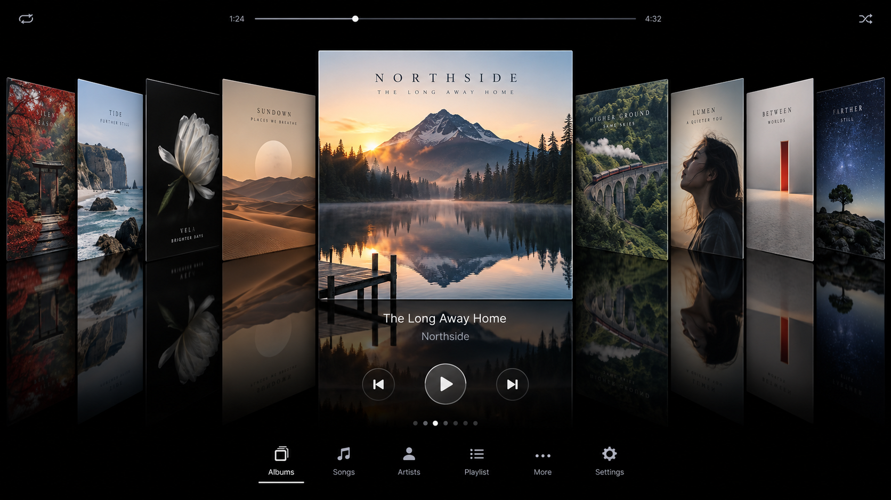

Reflective Cover Flow
Browse albums, songs, artists, playlists, years, genres, favourites, and radio through the WebGL carousel.

Navidrome front end
A responsive Cover Flow player for Navidrome. Browse, play, search, favourite, and export your library from desktop, mobile, or Raspberry Pi.
Clone the repo, start Navidrome, then run the local Node server:
git clone https://github.com/BASF2HD/NaviGlassPlayer.git
cd NaviGlassPlayer
npm startOpen http://127.0.0.1:8787 and sign in with your Navidrome username and password.
Built for a music library
Browse albums, songs, artists, playlists, years, genres, favourites, and radio through the WebGL carousel.
IndexedDB browser caching works with server-side album and stream caches for smoother access on lower-powered devices.
Desktop, phone, tablet, and Raspberry Pi layouts include seeking, song details, favourites, ratings, and playlists.
One-shot installers support Rocky Linux, Ubuntu, Synology DSM, and Raspberry Pi OS.
New in Settings
Export favourite songs, every track in favourite albums, and all or selected playlists into one UTF-8 CSV.
Duplicate songs are merged while album and playlist memberships are preserved. Exact filenames, extensions, relative paths, playlist positions, and dedicated favourite flags make the result ready for filtering in Finder, Windows Explorer, Excel, or another curation tool.
GitHub Pages hosts this project page only. The full player needs
npm start (or your own reverse proxy) because Navidrome credentials are sent through the local proxy, not from static hosting.
Deployment details: docs/deployment.md